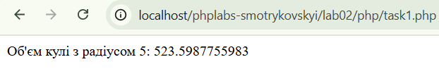
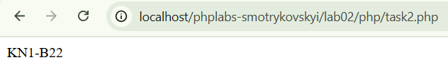

Лабораторна робота №2
Тема: Основи роботи з PHP
Виконав: Смотриковський Леонід Леонідович
Група: KN1-B22
Варіант: 4
Дата виконання: 18.03.2025
Завдання
- 1. Напишіть PHP-скрипт, який обчислює об'єм кулі за формулою: V = (4πr^3)/3, де r = 5.
Перейти до розв’язку

- 2. Напишіть PHP-скрипт, який демонструє перетворення числа в рядок та об’єднання зі словом.
Перейти до розв’язку
